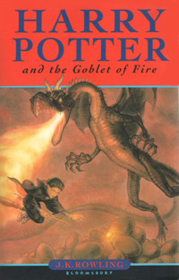
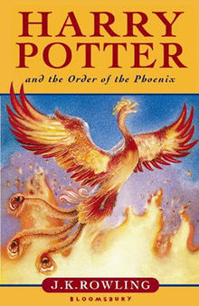
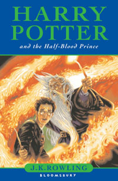

Harry Potter
Harry Potter is a fictional character in J. K. Rowling's Harry Potter series. His first appearance was in the first book of the series, Harry Potter and the Philosopher's Stone as the best friend of Ron Weasely and Hermione Granger
Daniel RadcliffeHermione Granger

Hermione Granger is a fictional character in J. K. Rowling's Harry Potter series. His first appearance was in the first book of the series, Harry Potter and the Philosopher's Stone as the best friend of Harry Potter and Ron Weasely
Emma WatsonRonald Weasely

Ronald Bilius "Ron" Weasley is a fictional character in J. K. Rowling's Harry Potter series. His first appearance was in the first book of the series, Harry Potter and the Philosopher's Stone as the best friend of Harry Potter and Hermione Granger
Rupert GrintHarry Potter Series

Harry Potter and the Philosopher's Stone is the first novel in the Harry Potter series and J. K. Rowling's debut novel, first published in 1997 by Bloomsbury. It was published in the United States as Harry Potter and the Sorcerer's Stone by Scholastic Corporation in 1998. The plot follows Harry Potter, a young wizard who discovers his magical heritage as he makes close friends and a few enemies in his first year at the Hogwarts School of Witchcraft and Wizardry. With the help of his friends, Harry faces an attempted comeback by the dark wizard Lord Voldemort, who killed Harry's parents, but failed to kill Harry when he was just 15 months old.
The novel won most of the British book awards that were judged by children and other awards in the US. The book reached the top of the New York Times list of best-selling fiction in August 1999 and stayed near the top of that list for much of 1999 and 2000. It has been translated into at least seventy three other languages and has been made into a feature-length film of the same name, as have all six of its sequels.

Harry Potter and the Chamber of Secrets is the second novel in the Harry Potter series, written by J. K. Rowling. The plot follows Harry's second year at Hogwarts School of Witchcraft and Wizardry, during which a series of messages on the walls of the school's corridors warn that the "Chamber of Secrets" has been opened and that the "Heir of Slytherin" would kill all pupils who do not come from all-magical families. These threats are found after attacks which leave residents of the school "petrified" (frozen like stone). Throughout the year, Harry and his friends Ron and Hermione investigate the attacks.
The book was published in the United Kingdom on July 2, 1998 by Bloomsbury and in the United States on June 2, 1999 by Scholastic Inc. Although Rowling found it difficult to finish the book, it won high praise and awards from critics, young readers and the book industry, although some critics thought the story was perhaps too frightening for younger children. Much like with other novels in the series, Harry Potter and the Chamber of Secrets triggered religious debates; some religious authorities have condemned its use of magical themes, while others have praised its emphasis on self-sacrifice and on the way in which a person's character is the result of the person's choices.

Harry Potter and the Prisoner of Azkaban is the third novel in the Harry Potter series, written by J. K. Rowling. The book follows Harry Potter, a young wizard, in his third year at Hogwarts School of Witchcraft and Wizardry. Along with friends Ronald Weasley and Hermione Granger, Harry investigates Sirius Black, an escaped prisoner from Azkaban who they believe is one of Lord Voldemort's old allies.
The book was published in the United Kingdom on 8 July 1999 by Bloomsbury and in the United States on 8 September 1999 by Scholastic Inc. Rowling found the book easy to write, finishing it just a year after she had begun writing it. The book sold 68,000 copies in just three days after its release in the United Kingdom and since has sold over three million in the country. The book won the 1999 Whitbread Children's Book Award, the Bram Stoker Award, the 2000 Locus Award for Best Fantasy Novel, and was short-listed for other awards, including the Hugo.

Harry Potter and the Goblet of Fire is the fourth novel in the Harry Potter series, written by British author J. K. Rowling. It follows Harry Potter, a wizard in his fourth year at Hogwarts School of Witchcraft and Wizardry and the mystery surrounding the entry of Harry's name into the Triwizard Tournament, in which he is forced to compete.
The book was published in the United Kingdom by Bloomsbury and in the United States by Scholastic; in both countries the release date was 8 July 2000, the first time a book in the series was published in both countries at the same time. The novel won a Hugo Award, the only Harry Potter novel to do so, in 2001. The book was made into a film, which was released worldwide on 18 November 2005, and a video game by Electronic Arts.

Harry Potter and the Order of the Phoenix is the fifth and antepenultimate novel in the Harry Potter series, written by J. K. Rowling. It follows Harry Potter's struggles through his fifth year at Hogwarts School of Witchcraft and Wizardry, including the surreptitious return of the antagonist Lord Voldemort, O.W.L. exams, and an obstructive Ministry of Magic. The novel was published on 21 June 2003 by Bloomsbury in the United Kingdom, Scholastic in the United States, and Raincoast in Canada. Five million copies were sold in the first 24 hours of publication. It is the longest book of the series.
Harry Potter and the Order of the Phoenix has won several awards, including being named an American Library Association Best Book for Young Adults in 2003. The book has also been made into a film, which was released in 2007, and into a video game by Electronic Arts.

Harry Potter and the Half-Blood Prince is the sixth and penultimate novel in the Harry Potter series, written by British author J. K. Rowling. Set during protagonist Harry Potter's sixth year at Hogwarts, the novel explores the past of Harry's nemesis, Lord Voldemort, and Harry's preparations for the final battle against Voldemort alongside his headmaster and mentor Albus Dumbledore.
The book was published in the United Kingdom by Bloomsbury and in the United States by Scholastic on 16 July 2005, as well as in several other countries. It sold nine million copies in the first 24 hours after its release, a record at the time which was eventually broken by its sequel, Harry Potter and the Deathly Hallows. There were many controversies before and after it was published, including the right to read the copies delivered prior to the release date in Canada. Reception to the novel was generally positive and it won several awards and honours, including the 2006 British Book of the Year award.

Harry Potter and the Deathly Hallows is the seventh and final novel of the Harry Potter series, written by British author J. K. Rowling. The book was released on 21 July 2007, ten years after publication of Harry Potter and the Philosopher's Stone (1997), by Bloomsbury Publishing in the United Kingdom, in the United States by Scholastic, and in Canada by Raincoast Books, ending the series that began in 1997 with the publication of Harry Potter and the Philosopher's Stone. The novel chronicles the events directly following Harry Potter and the Half-Blood Prince (2005), and the final confrontation between the wizards Harry Potter and Lord Voldemort, as well as revealing the previously concealed back story of several main characters. The title of the book refers to three mythical objects featured in the story, collectively known as the "Deathly Hallows"—an unbeatable wand, a stone to bring the dead to life, and a cloak of invisibility.
Before its release, Bloomsbury reportedly spent £10 million to keep the book's contents safe before its release date. American publisher Arthur Levine refused any copies of the novel to be released in advance for press review, although two reviews were submitted early. Shortly before release, photos of all 759 pages of the U.S. edition were leaked and transcribed, leading Scholastic to look for the source that had leaked it.
Other Books
The Cursed Child
Harry Potter and the Cursed Child is a two-part stage play written by Jack Thorne based on an original new story by Thorne, J. K. Rowling and John Tiffany. Previews of the play began at the Palace Theatre, London on 7 June 2016, and it officially premiered on 30 July 2016.
Fantastic Beasts and Where To Find Them
Fantastic Beasts and Where to Find Them is a 2001 book written by British author J. K. Rowling (under the pen name of the fictitious author Newt Scamander) about the magical creatures in the Harry Potter universe.